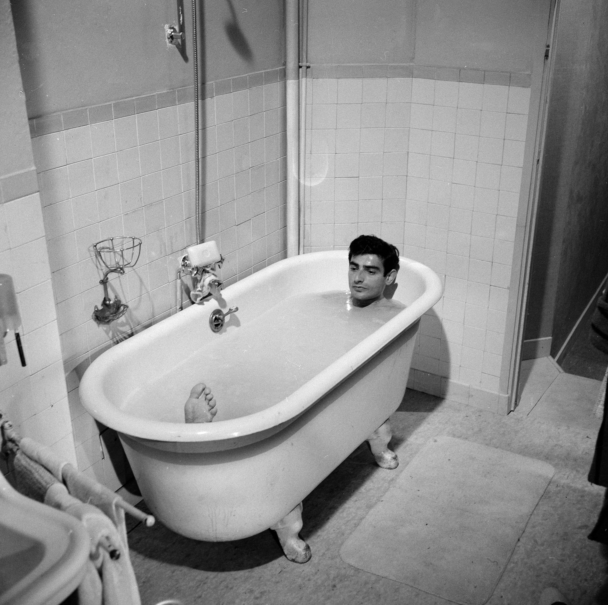

<!DOCTYPE html>
<html>
    <head>
    	<meta http-equiv="Content-Type" content="text/html; charset=utf-8"/>
        <meta name="viewport" content="width=device-width, initial-scale=1">
    
        <title>Charles Denner</title>

        <meta name="description" content="Site Officiel de l'acteur Charles Denner" />
        <meta name="keywords" content="actor, acteur, Charles Denner, site officiel, cinéma, theatre"> 
        <meta NAME="author" content="Charlet Denner"/>

        <link rel="icon" href="FaviconCharlesDenner.ico" />  
        <link href="css/bootstrap.min.css" rel="stylesheet">
        <link rel="stylesheet" type="text/css" href="css/main.css">
    </head>

    <body class="container-fluid">
        <header>

            <nav class"row">
               <div class="logo col-md-3">CHARLES</div>
               <ul class="navBar col-md-5 col-md-offset-3">
                    <li>Sa vie</li>
                    <li>Son Oeuvre</li>
                    <li>Actualités</li>
                    <li>Edition</li>
                    <li>Contact</li>
                    <li>Search</li>
               </ul>
           </nav>

           <div class"row">
                <div class="logo deux col-md-3">DENNER</div>
                <div class="col-md-1 col-md-offset-10 getSocial">
                    <ul class="scoialul">
                        <li> </li>
                        <li>Twitter</li>
                    </ul>
               </div>
           </div>

            <div class"row">
                <h1 class="col-md-3 col-md-offset-6">Charles Denner</h1>
                <h2 class="col-md-3 col-md-offset-6">L'homme </h2>
            </div>

            <div class"row">
                <h2 class="col-md-3 col-md-offset-7">aux mille</h2>
            </div>

            <div class"row">
                <h2 class="col-md-3 col-md-offset-6">visages</h2>
            </div>
        </header>

        <div class="row savie">
            <div class="col-md-4 col-md-offset-1 descriptif">
                <h3>SA VIE</h3>
                <h4>Un personnage <br/>
                hors norme</h4>

                <p class="description">
                    Sa silhouette et sa voix vous sont familières, surtout si vous êtes un admirateur du cinéma des années 1980. Charles Denner, cet artiste comédien fut à l’affiche de trente-six pièces et quarante-huit films. Il joua avec les plus grands : Jean-Paul Belmondo, Gérard Philipe, Lino Ventura, pour des réalisateurs de taille : Alain Jessua, Claude Lelouch, François Truffaut, Costa Gavras… L’acolyte de Belmondo dans Peur sur la ville, l’Homme qui aimait les femmes, pour Truffaut, c’était lui. 
                </p>
            </div>

            <article class="article tighty col-md-3 offsettop"> 
                
                <h5>Du TNP de Vilar au cinéma de Chabrol</h5> Lire plus
            </article> 
            <article class="article tighty col-md-3 offsettop">
                
                <h5>Du TNP de Vilar au cinéma de Chabrol</h5> Lire plus
            </article>   
        </div>


        <div class="oeuvres">

            <div class="row">
                <h3 class="col-md-3 col-md-offset-6 descriptif">SON OEUVRE</h3>
                <h4 class="col-md-3 col-md-offset-6 descriptif">Un parcours incroyable</h4>
            </div>

            <div class="row">
                <article class="offsettop col-md-3">
                      
                </article>

                <article class="offsettop col-md-3">
                      
                </article>

                <article class="col-md-3">
                      
                </article>

                <article class="col-md-3">
                      
                </article>
            </div>
        </div>

        <div class="actu">
            <div class="row">
                <div class="col-md-4 col-md-offset-1">
                    <h3>ACTUALITES</h3>
                    <h4>Un personnage en éternel mouvement</h4>
                    <p class="description"> 
                        Mises en scène ludiques et innovantes, documents authentiques, photographies, affiches, témoignages vidéo et extraits de films pour (re)découvrir ce grand acteur charismatique du cinéma et du théâtre.Mises en scène ludiques et innovantes, documents authentiques, photographies, affiches, témoignages vidéo et extraits de films pour (re)découvrir ce grand acteur charismatique du cinéma et du théâtre
                    </p>
                </div>

                <article class="col-md-3 article tighty"> 
                    
                    <h5>Du TNP de Vilar au cinéma de Chabrol</h5> Lire plus
                </article> 

                <article class="col-md-3 article tighty">
                    
                    <h5>Du TNP de Vilar au cinéma de Chabrol</h5> Lire plus
                </article>
            </div>
            <div class="row">
                <article class="col-md-10 col-md-offset-1 article large">
                    
                    <h5>Du TNP de Vilar au cinéma de Chabrol</h5> Lire plus
                </article>        
            </div>
        </div>

        <div class="row livre">

            <article class="col-md-6 articlelivre">
                 
            </article>

            <div class="col-md-6 descriptif">
                <h3>Le livre</h3>
                <h4>Un personnage en éternel mouvement</h4>

                <p class="description">
                    La montagne est le lieu de la mise à l'épreuve d'une relation, d'une histoire, entre père et fils. Charles Denner aimait les Monts Tatras de sa Pologne natale et plus passionnément encore les monts du Vercors du maquis de ses 17 ans. Son fils Charlet vénère les Alpes depuis son adolescence. Une course en Oisans va se faire le huis clos de la mémoire partagée et des paroles qui ne peuvent se délivrer ailleurs...
                </p>
            </div>
        </div>

        <footer class="footer">   
            <ul>
                <li>Contact</li>
                <li>Designed by MMI, 2016 ©</li>
                <li>A propos</li>
                <li></li>
            </ul>
        </footer>
    </body>
</html>
